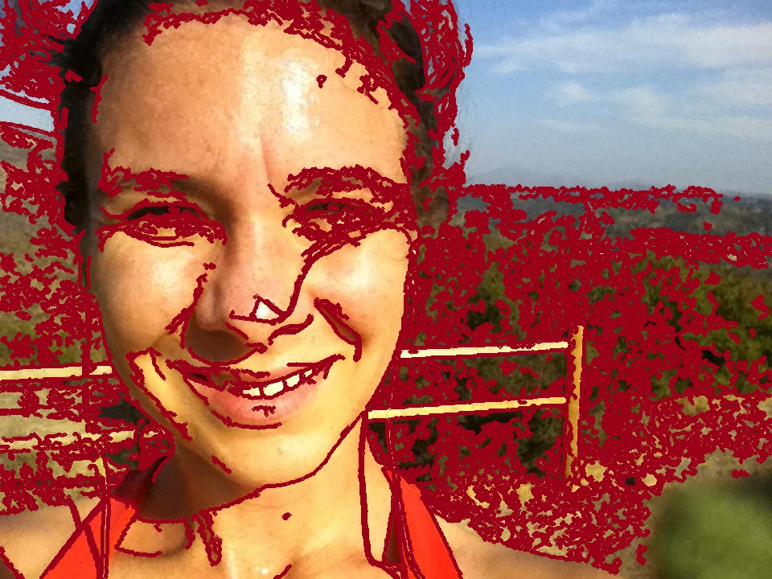
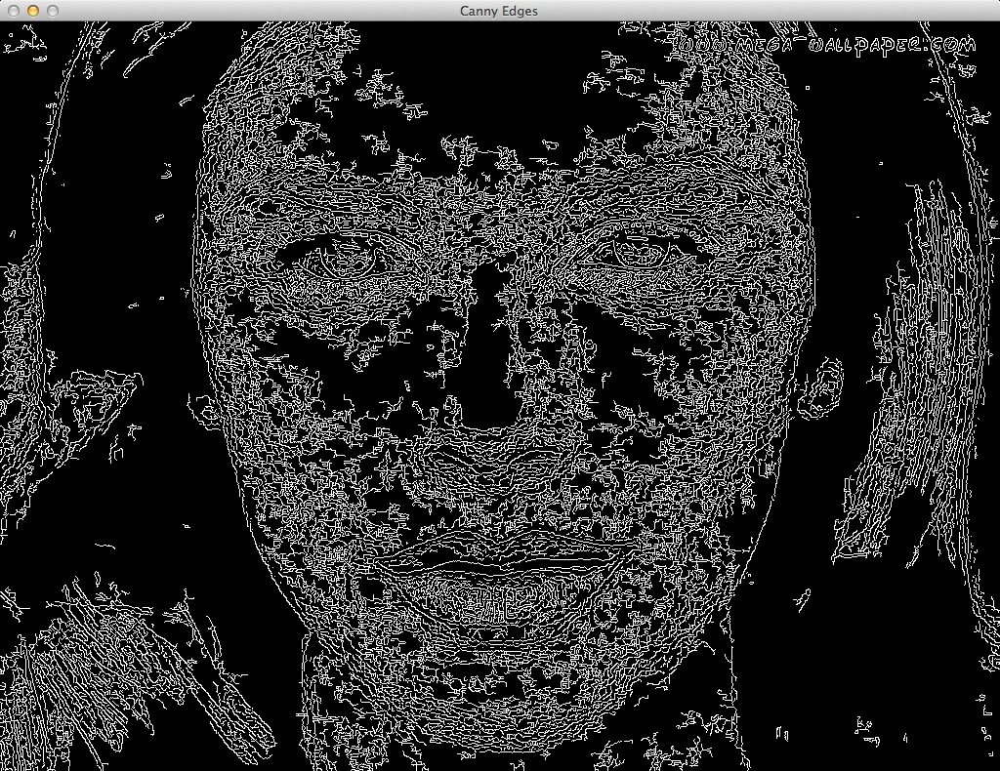

CS 152 - Neural Networks
Fall 2012
PROBLEM STATEMENT:
Looking for someone is no longer a task in Facebook - Facebook has automated the process. Even an iPhone can recognize faces, but what about detecting a person's emotions? This is something which many humans struggle with, as it requires a deep knowledge base of the signs of a particular emotion. So how could a computer do it? Neural Networks! We plan on using several databases of faces to build our network's knowledge and using these databases to train a network using backpropagation. Additionally, we may implement a fuzzy logic network that also uses HSV values to recognize skin vs. non-skin. We believe that this will improve the face recognition abilities as well as the emotion recognition since we would be able to categorize faces based on race and thus utilize our knowledge of variations in facial structures of different races.
As a first step, we will extract facial features from an image consisting of only a face. Then, we will match these features to our database of different emotions to determine which emotion the image corresponds to. If time allows, we will also be implementing a facial identifier for images, in which a face can be extracted from image, such as those from Facebook. Finally, we will link these two components to be better than Facebook (so we can get a job at Facebook after we graduate).
METHOD:
Feature extraction (experiment with methods)
Emotion matching (MLP)
FEATURE EXTRACTION:
We tried various methods of extracting features from the images, including canny, harris, sobel, surf, and principal component analysis. We wanted to be able to completely outline important features such as eyes, mouth, and nose without having too much background noise. Below are some initial images produced from each (increasing in specificity):
SURF |
HARRIS |
CANNY |
SOBEL |
Due to these initial results, we decided to continue working with the canny feature extraction model. Below is a more refined version of the canny network (coded in C, rather than Python).
ORIGINAL |
BAD |
MIDDLE |
GOOD |
Once we were satisfied with the results of the feature recognition using canny, we moved to extracting these features from out database images, which were less detailed and smaller. After initial trials, we determined that it would be better to recognize the face in the image and apply the canny feature recognition to only that part in order to decrease noise in the images.
ORIGINAL

NEURAL NETWORK:
We used a backpropagation network with 15334 input neurons, 500 hidden neurons, and 4 output neuron, which corresponded to the emotion the person was displaying. Our facial emotion database was from CMU, and contained 1888 images. We removed any images where the person was not facing forward or was wearing glasses. Our final data set thus contained 236 images. We trained the network using 75% of the images, randomly selected.
RESULTS:
WITHOUT FACE RECOGNITION:
INSTRUCTIONS FOR RUNNING:
INSTRUCTIONS FOR RUNNING:
- run makeXML.py (This takes all the images, runs canny feature recognition, and saves the image data as an XML file with the same name)
- run Image_Parsing.py (This finds all the XML files, reads the data into a numpy array, determines the hotCodes, and saves it as a text file)
- run neural3.py (This is the neural network. It reads in the text file, creates a backpropagation neural network and trains it for 100 epochs.)
RESOURCES:
- CMU Database- Journal article on an implementation of face recognition
- Face recognition using fuzzy logic and HSV
- Facial recognition using neurofuzzy network
- Similarity-based neural network for facial recognition across races
- Human emotional state- using 3-D modeling